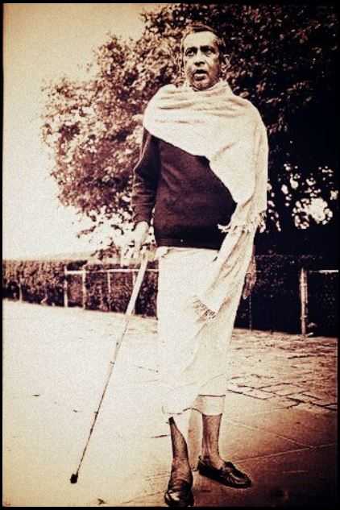

परम पूज्य भगवान राम जी के गुण व ज्ञान को समझने और मनन करने के लिए बहुत से अघोर स्थान बनाये गए हैं।
जहां महाप्रभु की अनुभूति होती है
उन्ही स्थानो में से महाप्रभु की एक अलोकिक मंदिर सकलडीहा ताजपुर मार्ग पर स्थिति है।
अघोरेश्वर के विषय में जीतना कहा जाय कम है। परन्तु कुछ विशेष बाते इस प्रकार है की।
अघोरेश्वर के अनुयायी संदेह से बहुत दूर रहते हैं। वे तन-मन में नहीं रहते।
वे स्वयं की चेतना में निवास करते हैं, और संकल्प के साथ वे बहुत महत्वपूर्ण अवस्थाओं में
पहुँच जाते हैं। इन अवस्थाओं में पहुंचने के बाद वे इतने विनम्र हो जाते हैं कि उनकी आवाज में
मिठास के अलावा कुछ नहीं होता।
उनकी शब्दावली में अपवित्र करने वाले, उत्तेजक शब्दों या शत्रुता फैलाने वाले शब्दों के लिए
कोई स्थान नहीं है। ऐसे शब्द तो पैदा ही नहीं होते। जब भी आप ऐसे लोगों से मिलें, तो उन्हें
कपालेश्वर (ब्रह्मांड में रहने वाले महान अज्ञात, अघोरेश्वर की आत्मा) का आशीर्वाद लें। अटूट विश्वास
और श्रद्धा के साथ, वे मानवीय कष्टों से प्रभावित होते हैं। ये तपस्वी अच्छी तरह से खेती करते हैं वे
किसी को वैमनस्य फैलाते देखना पसंद नहीं करते, उनका तरीका है मित्रता, करुणा, एक दूसरे के
भीतर प्रेम देखना
कर्म रहित कर्म के इस सिद्धांत का पालन करते हुए वे हर चीज का सम्मान करते हुए
अपनी तपस्या में निर्दोष और दृढ़ रहते हैं। वे दूसरों से धोखा खा सकते हैं, लेकिन वे
दूसरों को कभी धोखा नहीं देते। अभिमानहीन रहकर दूसरों के प्रति सम्मान प्रकट करते हैं।
चाहे उस कपड़े में छेद हो या न हो, चाहे उसे कूड़ेदान में फेंक दिया गया हो या मृतकों के
लिए कफन के रूप में इस्तेमाल किया गया हो, वे कपड़े के फेंके हुए टुकड़ों को अपने कपड़ों के
रूप में इस्तेमाल करते हैं। वे केवल ऐसी चीजों का उपयोग करना चाहते हैं जो किसी अन्य व्यक्ति
के किसी काम की न हों।
ये औघर तपस्वी शराब, सेक्स, झूठ और छल का त्याग करते हैं जैसे वे जहर देंगे। वे
नस्ल, रंग या धर्म के आधार पर भेदभाव किए बिना, लगातार दूसरों की भलाई के लिए
प्रदान करने में लगे हुए हैं।
बोली शब्द का तात्पर्य निपुण लोगों के उस अत्यंत सुखदायक भाषण से है।
उसी वाणी के स्पंदन से बिना किसी कर्मकांड, पूजा या प्राणायाम के एक चमक,
एक चमक और बिजली की तरह धाराएं प्राप्त होती हैं। चिंतन के प्रवाह में ही वह सब
कुछ प्राप्त हो जाता है जो चेतना का है। औघड़ तपस्वी को देखना स्वयं शिव की एक झलक
पाने के समान है। औघड़ न केवल निष्पक्ष होते हैं बल्कि निष्पक्ष भी होते हैं। वे अपनी महानता
में सबके साथ सामाजिक संबंधों को स्वीकार करते हैं। वे न्यायिक नहीं हैं। जिस प्रकार सूर्य,
चन्द्रमा, पृथ्वी, अग्नि और वायु यहां किसी धर्म, वर्ग, जाति या राष्ट्र के लिए नहीं हैं, उसी प्रकार
निष्पक्षता की स्थिति प्राप्त करने वाला औघड़ सभी के कल्याण के लिए कार्य करता है। औघरों के
ये सभी गुण सभी को यह सीखने में मदद करते हैं कि कैसे अपने मानसिक संशोधनों को नियंत्रित
किया जाए और इसके परिणामस्वरूप नकारात्मक विचार और प्रवृत्ति कम हो जाती है।